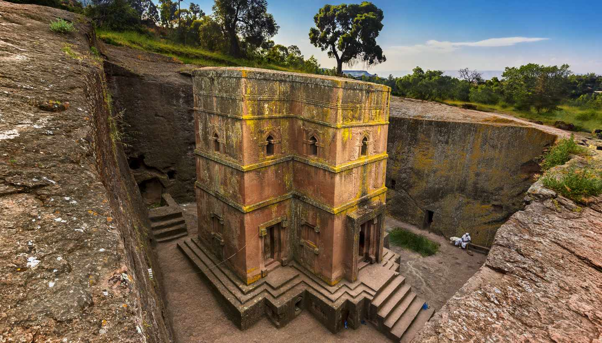
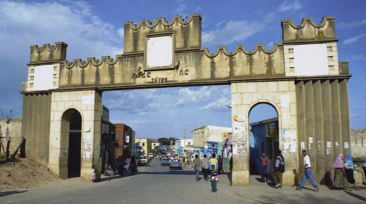

Historical Sites
Lalibela Rock Churches
Lalibela is famous for its amazing rock cut churches. Carved out of the rock rather than built with stone, each of these eleven churches has
been excavated from the rock, cutting down up to 40 feet then cutting out the intricate interior with great care.
Access to the buildings is down a rocky staircase. Once down, the Lalibela churches are linked by a series of tunnels and walkways.

The Yeha Temple
The Yeha Temple, also known as the Great Temple of Yeha, is possibly the oldest standing building in Ethiopia, dating back, it is thought, to around 700 BC.
It harks back to the earliest religions of the area and contains some Judaic artefacts, perhaps giving some credence to claim of the early dynasty of their
descent from King Solomon and the Queen of Sheba. Other places of interest at Yeha include a burial ground and ruined buildings containing, amongst other things,
some interesting square columns. There have been some archaeological digs in the area, dating back to the early 1950’s

Axum
Axum is most famous for being one of the supposed sites of the Ark of the Covenant, in the care of the Ethiopian Orthodox Church. Supposed to have been
brought to Ethiopia by the Queen of Sheba, it is currently in the care of the patriarch of the Ethiopian Church in a vault at the church of. St Mary
of Zion.Other important sites within the city are the Stelae Park. Much excavated, the stelae are thought to mark graves. The site is considered
important enough for it to have been designated a World Heritage Site by UNESCO. Other sites of interest include the Queen of Sheba’s bath and two
Royal Palaces, on from the fourth century andone from the sixth century CE.
The Harar Jugol
Harar Jugol, also known simply as Harar, was an important 16th century capital and remains an important fortified historic town in Ethiopia. It served as a vital
trade route from the late 16th to 19th centuries and is also said to be the fourth holiest city of Islam.Today, Harar Jugol is a UNESCO World Heritage site, best
known for its distinctive and well preserved historic townhouses which reflect its cultural heritage, particularly those of African and Islamic traditions.
The most intact elements of the historic town of Harar Jugol are said to lie in the eastern and south-eastern part of the walled town. It is home to three 10th
century mosques and an impressive 82 mosques overall.
